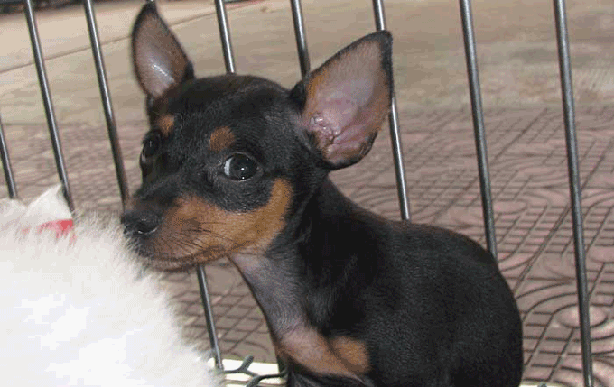
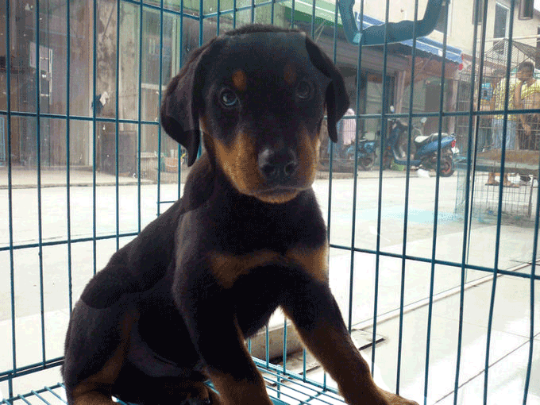

宠物小新
版权所有,未经作者许可,不得以任何形式使用!
小名:小新
体高:30cm
体重:1.5kg
被毛:硬、滑、短
毛色:黑色，在面颊部、唇部，下鄂、头部 、两眼上方、胸部及四肢内侧匀有棕黄色块。

小新是迷你笃宾,它是德国本地犬的一种，它不是大家认为的小型道伯曼。它已经存在几个世纪了，它的祖 先是德国笃宾犬。德国笃宾犬的血统里混有了意大利灰猎犬和腊肠犬的基因。有一幅画叫农民之家，创作于1640年 ，如今保存在巴黎卢浮宫。画中就有一头很像迷你笃宾的犬哦。

小新有修长的腿，身姿优美，提起前肢，走起路来恰如小马一样轻快。它善捕捉老鼠，爱吠，可以当守门犬。住德国，人们曾经从体形上给它命名为象小鹿的犭更，1929年英国设立犬种俱乐部，该犬正式定名为小鹿犬..
性格:机灵、快活、具有便的活泼气质，自尊心强!
其它特点:头盖骨逐步变狭，小而上竖或下垂的双耳，明亮深色的眼 睛，躯干结实，尾位高，一般在根部结尾。四方形的身躯头部和身体十分相称，直立的断耳，短的断尾。硬而滑的短 毛，有光泽，毛色呈红、黑、黄相间，也有黄褐色的。